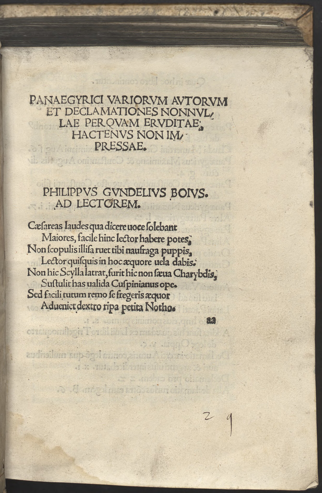

Spießheimer 2 (Philipp Gundel)
Faksimile

Transkription
Philippus Gundelius Boius. Ad lectorem.
Caesareas laudes qua dicere voce solebant
Maiores, facile hinc lector habere potes,
Non scopulis illisa ruet tibi naufraga puppis,
Lector quisquis in hoc aequore vela dabis.
Non hic Scylla latrat, furit hic non saeva Charybdis,
Sustulit has valida Cuspinianus ope.
Sed facili tutum remo se fregerit aequor
Adveniet dextro ripa petita Notho.
Übersetzung
Der Boier Philipp Gundel an den Leser.
Mit welcher Stimme die Vorfahren kaiserliche Lobeshymnen zu sprechen pflegten, kannst du, Leser, hiervon leicht erkennen, nicht wird dir der schiffbrüchige Kiel, an den Felsen zerschmettert, untergehen, welcher Leser auch immer du in diesem Gewässer Segel setzt. Hier tobt nicht Skylla, hier rast nicht die wilde Charybdis, diese hat Spießheimer mit seinem kräftigen Beistand beseitigt. Aber durch ein geschicktes Ruder wird sich das sichere Meer entkräften und das Ufer, das du anstrebst, wird durch günstigen Südwind näher kommen.
Metadaten
| Titel des Gedichts: | Philippus Gundelius Boius. Ad lectorem. |
| Autor der Gedichts: | Philipp Gundel (Philippus Gundelius) |
| Containerwerk: | Panaegyrici Variorum Autorum et Declamationes Nonnullae perquam eruditae hactenus non impressae, Wien 1513 |
| Autor des Containerwerks: | Johannes Spießheimer (Joannes Cuspinianus) |
| Gattung des Containerwerks: | Edition, Panegyricus, Deklamation |
| Erscheinungsjahr: | 1513 |
| Verschlagwortung: | Poetologie, Meer, Schiff, Felsen, Wind, Lob, Skylla, Charybdis, Ruder, Ufer |